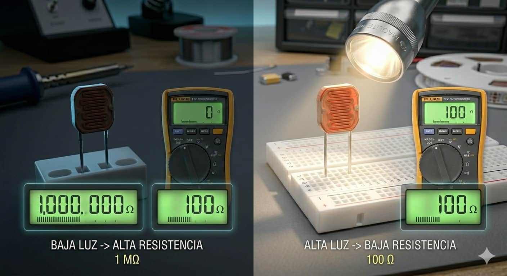
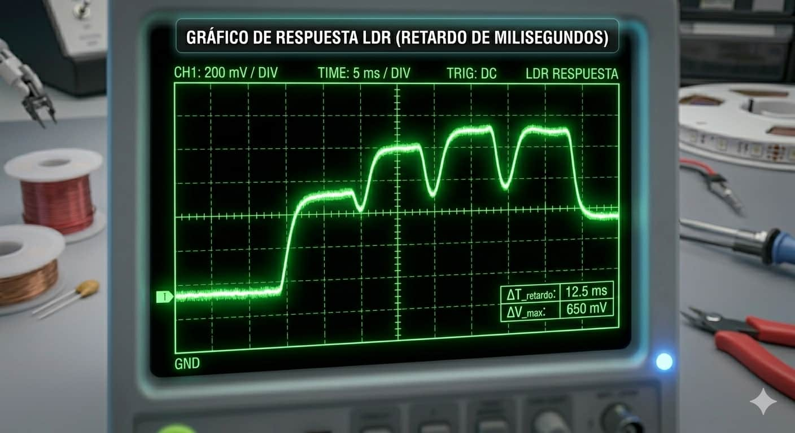
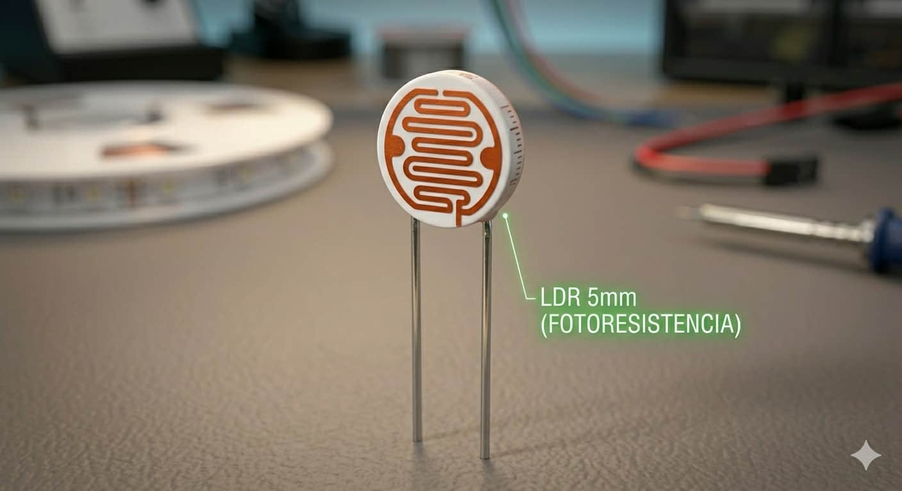
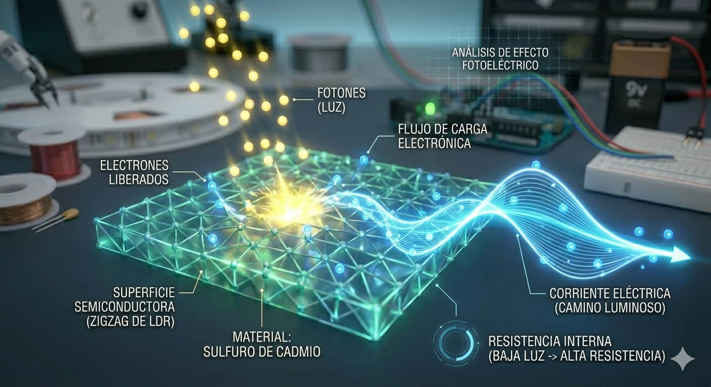
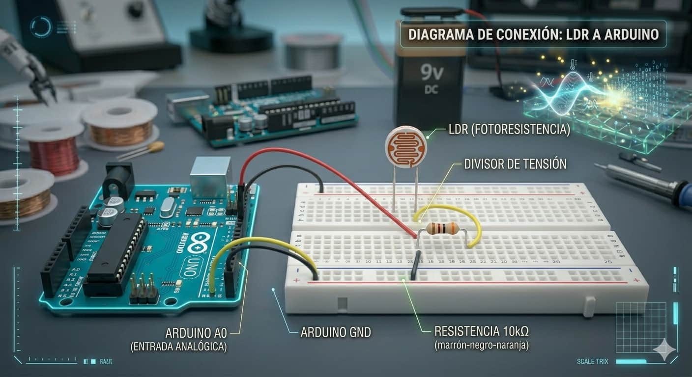

Rango de Resistencia

En oscuridad total su resistencia es altísima (1MΩ), mientras que bajo luz intensa baja drásticamente hasta los 100Ω.

El LDR (Resistencia Dependiente de la Luz) es un componente cuya resistencia cambia según la cantidad de luz que recibe. Es el encargado de permitir que tu robot "vea" la intensidad lumínica del ambiente.

En oscuridad total su resistencia es altísima (1MΩ), mientras que bajo luz intensa baja drásticamente hasta los 100Ω.

Aunque es un poco lento (milisegundos), es perfecto para detectar cambios en la iluminación ambiental de una habitación.

El modelo más utilizado en educación es el de sulfuro de cadmio, reconocible por su superficie con líneas en zigzag.

Está hecho de un material semiconductor que libera electrones al recibir fotones. Analogía: Imagina un pasillo lleno de obstáculos. En la oscuridad, los obstáculos bloquean el paso; cuando hay luz, los obstáculos se quitan y la electricidad fluye libremente.
Para que el Arduino pueda entender al LDR, necesitamos convertir el cambio de resistencia en un cambio de voltaje mediante un divisor de voltaje.

Configuramos el circuito para que el pin A0 lea la variación de energía:
Este programa muestra en el Monitor Serie la cantidad de luz detectada (valores de 0 a 1023):
void setup() { Serial.begin(9600); }
void loop() {
int valor = analogRead(A0);
Serial.println(valor); delay(500);
}
Aprende a montar este circuito paso a paso y visualiza los datos en tiempo real: